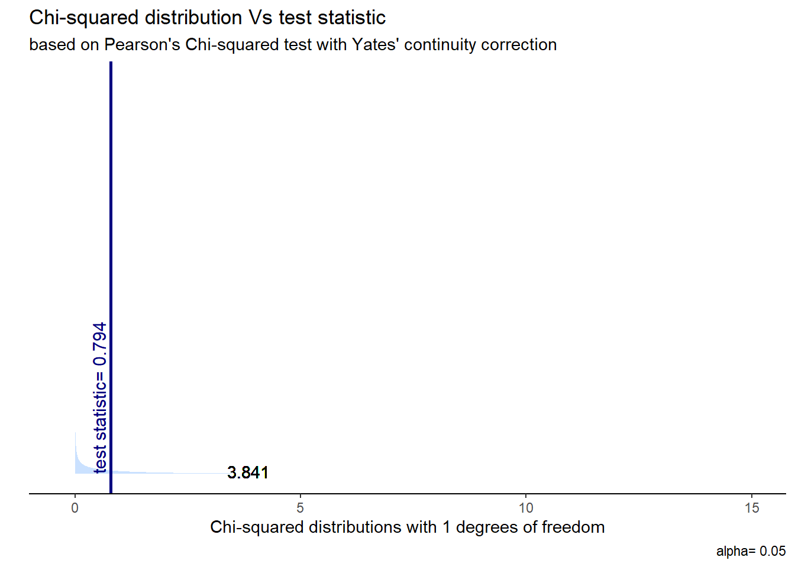
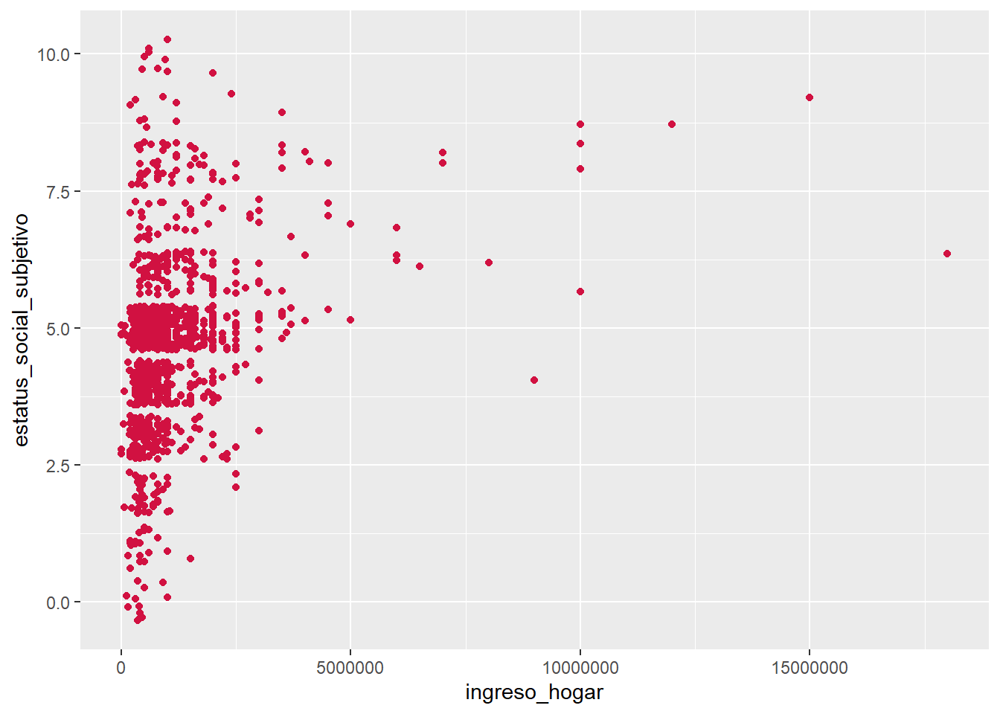
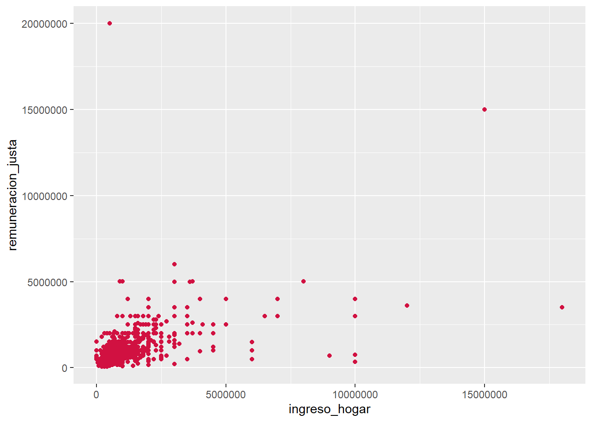

pacman::p_load(tidyverse, # colección de paquetes para manipulación de datos
dplyr, # para manipular datos
haven, # para importar datos
car, # para recodificar datos
magrittr,
summarytools,
gginference)# para manipular datos
options(scipen = 999) # para desactivar notacion cientifica
rm(list = ls()) # para limpiar el entorno de trabajo0. cargar paquetes
1. cargar datos
load("input/elsoc.RData")2. ANALISIS BIVARIADO: CATEOGRICOS
¿CUALES ERAN LAS VARIABLES CATEOGRICAS?
Grado de acuerdo: Familia sufre cuando la mujer tiene un trabajo
sjmisc::frq(proc_elsoc$sufrimiento_familia)x <categorical>
# total N=1125 valid N=1125 mean=3.99 sd=0.90
Value | N | Raw % | Valid % | Cum. %
---------------------------------------------------------------
Totalmente en desacuerdo | 21 | 1.87 | 1.87 | 1.87
En desacuerdo | 110 | 9.78 | 9.78 | 11.64
Ni de acuerdo ni en desacuerdo | 0 | 0.00 | 0.00 | 11.64
De acuerdo | 718 | 63.82 | 63.82 | 75.47
Totalmente de acuerdo | 276 | 24.53 | 24.53 | 100.00
<NA> | 0 | 0.00 | <NA> | <NA>Satisfaccion con la vida
sjmisc::frq(proc_elsoc$satisfaccion_vida)x <categorical>
# total N=1125 valid N=1125 mean=4.03 sd=0.75
Value | N | Raw % | Valid % | Cum. %
--------------------------------------------------------------
Totalmente insatisfecho | 4 | 0.36 | 0.36 | 0.36
Insatisfecho | 92 | 8.18 | 8.18 | 8.53
Ni satisfecho ni insatisfecho | 0 | 0.00 | 0.00 | 8.53
Satisfecho | 800 | 71.11 | 71.11 | 79.64
Totalmente satisfecho | 229 | 20.36 | 20.36 | 100.00
<NA> | 0 | 0.00 | <NA> | <NA>¿CON QUE TÉCNICAS ESTADISTICAS PODEMOS ANALIZARLAS?
TABLAS DE CONTINGENCIA
paso a paso
ctable(proc_elsoc$satisfaccion_vida_rec, proc_elsoc$sufrimiento_familia_rec)Cross-Tabulation, Row Proportions
satisfaccion_vida_rec * sufrimiento_familia_rec
Data Frame: proc_elsoc
----------------------- ------------------------- --------------- ------------- ---------------
sufrimiento_familia_rec En desacuerdo De acuerdo Total
satisfaccion_vida_rec
Insatifecho 8 ( 8.3%) 88 (91.7%) 96 (100.0%)
Satisfecho 123 (12.0%) 906 (88.0%) 1029 (100.0%)
Total 131 (11.6%) 994 (88.4%) 1125 (100.0%)
----------------------- ------------------------- --------------- ------------- ---------------tabla linda
proc_elsoc %>%
sjPlot::sjtab(satisfaccion_vida_rec,
sufrimiento_familia_rec,
show.row.prc = TRUE, # porcentaje fila
show.col.prc = TRUE, # porcentaje columna
)| structure(c(2L, 2L, 2L, 2L, 2L, 2L, 1L, 2L, 2L, 2L, 2L, 2L, 2L, |
2L, 2L, 2L, 2L, 2L, 2L, 1L, 2L, 2L, 2L, 2L, 2L, 2L, 2L, 2L, 2L, |
Total | |
|---|---|---|---|
| En desacuerdo | De acuerdo | ||
| Insatifecho | 8 8.3 % 6.1 % |
88 91.7 % 8.9 % |
96 100 % 8.5 % |
| Satisfecho | 123 12 % 93.9 % |
906 88 % 91.1 % |
1029 100 % 91.5 % |
| Total | 131 11.6 % 100 % |
994 88.4 % 100 % |
1125 100 % 100 % |
| χ2=0.794 · df=1 · φ=0.032 · p=0.373 | |||
¿QUÉ ES?
CHI CUADRADO
chi_results <- chisq.test(proc_elsoc$satisfaccion_vida_rec, proc_elsoc$sufrimiento_familia_rec)
chi_results #no es significativo, por tanto no hay asociacion
Pearson's Chi-squared test with Yates' continuity correction
data: proc_elsoc$satisfaccion_vida_rec and proc_elsoc$sufrimiento_familia_rec
X-squared = 0.79424, df = 1, p-value = 0.3728tabla bonita
chi_results <- chisq.test(table(proc_elsoc$satisfaccion_vida_rec,
proc_elsoc$sufrimiento_familia_rec))
stats.table <- broom::tidy(chi_results, conf_int = T)
rempsyc::nice_table(stats.table)statistic | p | parameter | Method |
|---|---|---|---|
0.79 | .373 | 1 | Pearson's Chi-squared test with Yates' continuity correction |
grafico
ggchisqtest(chi_results)Warning in geom_text(aes(x = ub, y = -0.02), label = round(ub, 3), vjust = 0.3): All aesthetics have length 1, but the data has 10000 rows.
ℹ Please consider using `annotate()` or provide this layer with data containing
a single row.
2. ANALISIS BIVARIADO: NUMERICOS
Ingreso total del hogar (monto)
summary(proc_elsoc$ingreso_hogar) Min. 1st Qu. Median Mean 3rd Qu. Max.
0 490000 770000 1084025 1200000 18000000 Estatus Social Subjetivo: Donde se ubicaria ud. en la sociedad chilena
summary(proc_elsoc$estatus_social_subjetivo) Min. 1st Qu. Median Mean 3rd Qu. Max.
0.000 4.000 5.000 4.758 5.000 10.000 Remuneracion justa entrevistado
summary(proc_elsoc$remuneracion_justa) Min. 1st Qu. Median Mean 3rd Qu. Max.
50000 550000 800000 1034477 1200000 20000000 CORRELACION
caso 1
cor(x = proc_elsoc$ingreso_hogar,
y = proc_elsoc$estatus_social_subjetivo,
use = "complete.obs")[1] 0.2945833caso 2
cor(x = proc_elsoc$ingreso_hogar,
y = proc_elsoc$remuneracion_justa,
use = "complete.obs")[1] 0.5019033GRAFICO DE PUNTOS
caso 1
sjPlot::plot_scatter(data = proc_elsoc,
x = ingreso_hogar,
y = estatus_social_subjetivo)
caso 2
sjPlot::plot_scatter(data = proc_elsoc,
x = ingreso_hogar,
y = remuneracion_justa)
Coeficinete de determinacion R2
caso 1
r <- cor(x = proc_elsoc$ingreso_hogar,
y = proc_elsoc$estatus_social_subjetivo,
use = "complete.obs")
r^2[1] 0.08677933#para estimar en %
r^2*100[1] 8.677933#0.7%caso 2
r <- cor(x = proc_elsoc$ingreso_hogar,
y = proc_elsoc$remuneracion_justa,
use = "complete.obs")
r^2[1] 0.2519069#para estimar en %
r^2*100[1] 25.19069#25%